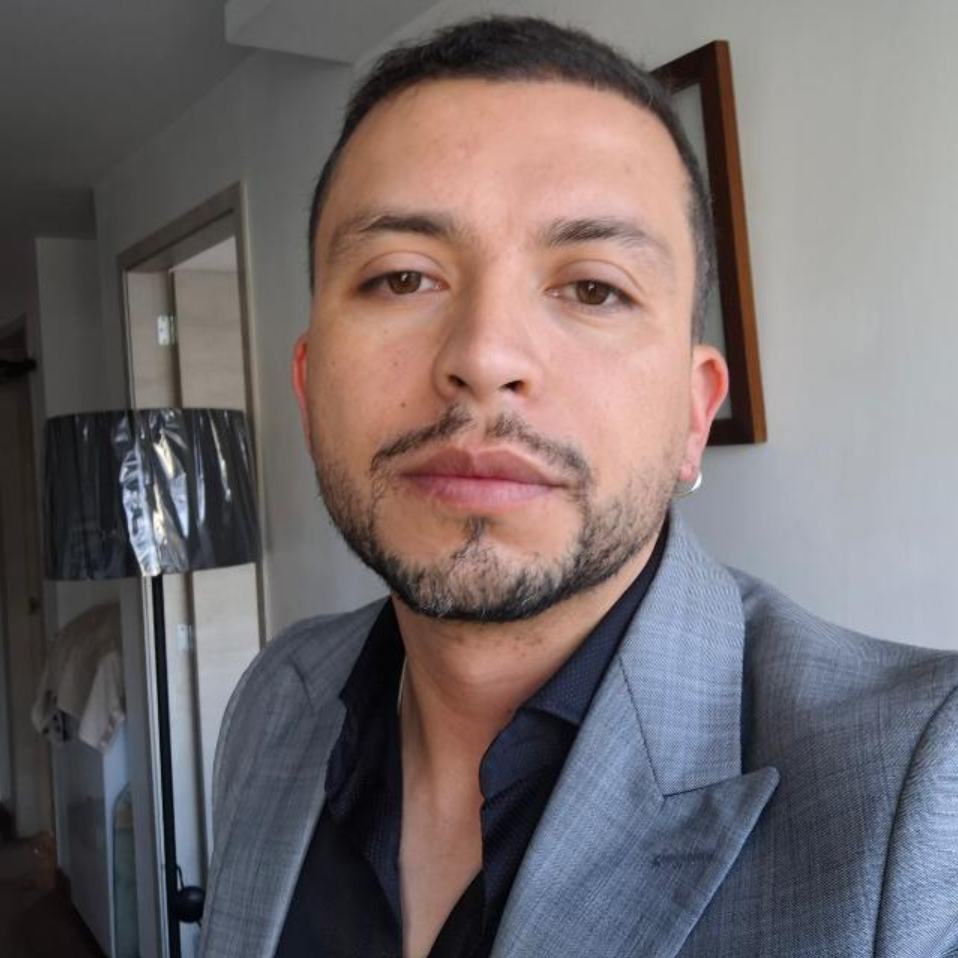

Av. Dr. Dias da Silva, 165
3004-512 Coimbra, Portugal
About Me
Hello there! I'm William, a PhD student in Economics at the Faculty of Economics, University of Coimbra (Portugal), supported by a research grant from the Center for Business and Economics Research (CeBER). My academic journey includes a Master's degree in Development Economics from the Latin American Institute of Social Sciences (FLACSO, Ecuador), a B.S. in Economics from Jean Monnet University (France), and an Engineering degree in Economics and Finance from the National Polytechnic School (EPN, Ecuador).
Before joining University of Coimbra, I held several leadership roles in Ecuador, including Council Advisor for CEAACES and Faculty Coordinator for Internationalization and Outreach at Universidad UTE, where I have also been teaching since 2024. My research focuses on macroeconomics, development economics, and economic sociology, with expertise in econometrics and statistical analysis.
Contact
- University of Coimbra: echeverriatigse@student.fe.uc.pt
- University UTE: william.echeverria@ute.edu.ec
- Personal: willecheverriat@gmail.com
See my Research page for publications, working papers, and presentations.
Skills
LaTeX
Python
R
MATLAB
Stata
VS Code